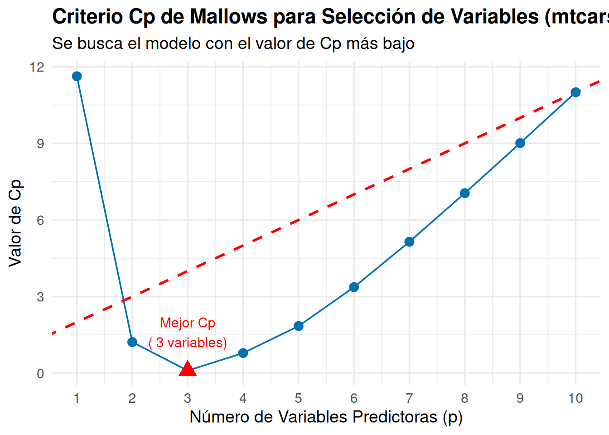

# Configuración y generación de datos
set.seed(123)
n <- 100
p <- 15
# Generar datos con diferentes características
X <- matrix(rnorm(n * p), n, p)
colnames(X) <- paste0("X", 1:p)
# Variable constante (sin variabilidad)
X[, 1] <- 5
# Variable con muy baja variabilidad
X[, 2] <- 5 + rnorm(n, 0, 0.01)
# Variables moderadamente correlacionadas
X[, 4] <- X[, 3] + rnorm(n, 0, 0.5)
X[, 5] <- 0.7 * X[, 3] + rnorm(n, 0, 0.6)
# Variable respuesta con coeficientes conocidos
beta <- c(0, 0, 2, 1.5, 1.2, -1, 0.8, rep(0, 8))
y <- X %*% beta + rnorm(n)
datos <- data.frame(y = y, X)
suppressPackageStartupMessages(library(car))
# 1. Análisis de variabilidad
varianzas <- apply(X, 2, var)
vars_baja_var <- which(varianzas < 0.01)
# 2. Filtrar por correlación con Y
X_filtrada <- if(length(vars_baja_var) > 0) X[, -vars_baja_var] else X
correlaciones <- cor(X_filtrada, y)
vars_baja_corr_idx <- which(abs(correlaciones) < 0.1)
vars_baja_corr <- if(length(vars_baja_corr_idx) > 0) {
as.numeric(gsub("X", "", colnames(X_filtrada)[vars_baja_corr_idx]))
} else {
c()
}
# 3. Identificar correlaciones altas entre predictores
cor_matrix <- cor(X_filtrada)
high_cor <- which(abs(cor_matrix) > 0.8 & abs(cor_matrix) < 1, arr.ind = TRUE)
# 4. Calcular VIF para variables restantes
vars_eliminar <- unique(c(vars_baja_var, vars_baja_corr))
datos_final <- if(length(vars_eliminar) > 0) {
datos[, -(vars_eliminar + 1)] # +1 porque datos incluye y en primera columna
} else {
datos
}
vif_valores <- if(ncol(datos_final) > 2) {
modelo <- lm(y ~ ., data = datos_final)
vif(modelo)
} else {
NULL
}
# Preparar resumen de resultados
resumen_vars_baja_var <- if(length(vars_baja_var) > 0) {
paste("X", vars_baja_var, collapse=", ")
} else {
"Ninguna"
}
resumen_vars_baja_corr <- if(length(vars_baja_corr) > 0) {
paste("X", vars_baja_corr, collapse=", ")
} else {
"Ninguna"
}
resumen_high_cor <- if(nrow(high_cor) > 0) {
correlaciones_altas <- character()
for(i in 1:nrow(high_cor)) {
var1 <- colnames(X_filtrada)[high_cor[i,1]]
var2 <- colnames(X_filtrada)[high_cor[i,2]]
corr_val <- round(cor_matrix[high_cor[i,1], high_cor[i,2]], 3)
correlaciones_altas <- c(correlaciones_altas, paste(var1, "y", var2, ":", corr_val))
}
correlaciones_altas
} else {
"Ninguna"
}
vars_restantes <- ncol(datos_final) - 1
vars_originales <- p
resumen_vif <- if(!is.null(vif_valores)) {
vif_summary <- character()
for(i in 1:length(vif_valores)) {
estado <- if(vif_valores[i] > 10) " (ALTO)" else if(vif_valores[i] > 5) " (moderado)" else ""
vif_summary <- c(vif_summary, paste(names(vif_valores)[i], ":", round(vif_valores[i], 2), estado))
}
vif_summary
} else {
"No calculado"
}5 Selección de variables, regularización y validación
En los modelos de regresión, especialmente cuando se trabaja con conjuntos de datos que incluyen un gran número de variables predictoras, es común enfrentarse al desafío ntficar qué variables son realmente relevantes para explicar la variable respuesta. La inclusión de demasiadas variables en un modelo puede llevar a problemas como el sobreajuste, pérdida de interpretabilidad y complejidad innecesaria, mientras que la exclusión de variables importantes puede resultar en modelos subóptimos.
Este tema aborda uno de los aspectos más críticos en la construcción de modelos de regresión: cómo seleccionar el subconjunto óptimo de variables predictoras y cómo validar la calidad del modelo resultante. Una vez realizado el análisis exploratorio y el ajuste inicial del modelo, surge la necesidad crítica de optimizar la selección de variables. Cuando se dispone de \(p\) variables explicativas, es posible construir hasta \(2^p\) modelos diferentes considerando todas las combinaciones posibles. Sin embargo, explorar de manera exhaustiva todos estos modelos puede ser computacionalmente inviable cuando \(p\) es grande.
Para superar este desafío, en este tema nos enfocaremos en cinco enfoques principales:
Filtrado basado en información básica: Eliminación preliminar de variables irrelevantes mediante criterios básicos (variabilidad, correlación, VIF)
Criterios de bondad de ajuste: Métricas para comparar modelos con diferente número de variables (AIC, BIC, Cp de Mallows)
Métodos de selección exhaustiva: Evaluación sistemática de todas las combinaciones posibles (Best Subset Selection)
Métodos automáticos paso a paso: Selección iterativa mediante algoritmos forward, backward y stepwise
Métodos basados en regularización: Técnicas que penalizan la complejidad del modelo (Ridge, Lasso, Elastic Net)
Validación del modelo: Evaluación rigurosa de la capacidad predictiva mediante división train/test y validación cruzada
Cada enfoque tiene sus propias ventajas y limitaciones, siendo apropiados para diferentes situaciones según el tamaño del dataset, el número de variables y los objetivos del análisis. El objetivo es presentar las técnicas más relevantes para la selección de variables y regularización, entender sus fundamentos teóricos, y aplicarlas a casos prácticos, culminando con métodos robustos de validación que aseguren la calidad y generalización del modelo final.
5.1 Proceso completo de construcción y optimización del modelo
La construcción de un modelo de regresión múltiple es un proceso sistemático que busca explicar la relación entre una variable respuesta (\(Y\)) y múltiples variables predictoras (\(X_1, X_2, \dots, X_k\)). Este proceso consta de varias etapas clave (Kutner et al. 2005), que en este tema nos enfocaremos particularmente en las etapas de reducción de variables y validación:
- Definición del problema y variables de interés:
- Identificar claramente el objetivo del análisis, ya sea realizar predicciones, evaluar relaciones o controlar por efectos de variables confusoras.
- Seleccionar las variables predictoras potenciales en función de su relevancia teórica, conocimiento previo o exploración inicial de los datos.
- Recogida de datos:
- La calidad de los datos recogidos influye directamente en la validez de los resultados y conclusiones obtenidas. El proceso de recogida de datos consiste en recopilar información de manera organizada y sistemática para responder a las preguntas de investigación planteadas. Dependiendo del diseño del estudio y los objetivos del análisis, se pueden emplear diferentes tipos de experimentos o métodos de recogida de datos.
- Debemos asegurar las siguientes características sobre los datos.
- Fiabilidad: Asegurar que los datos sean consistentes y puedan reproducirse bajo condiciones similares.
- Validez: Garantizar que los datos recojan realmente la información necesaria para responder a las preguntas de investigación.
- Ética: Asegurar la privacidad y el consentimiento informado de los participantes.
- Control de Sesgos: Diseñar el estudio de manera que se minimicen los sesgos que puedan distorsionar los resultados.
Tipos de experimentos
La elección del tipo de experimento o método de recogida de datos dependerá de la naturaleza del problema a investigar, los recursos disponibles y las limitaciones del estudio. Una correcta planificación y ejecución de esta etapa sienta las bases para un análisis robusto y confiable.
- Experimentos controlados:
- Los experimentos controlados son diseñados de manera que los investigadores manipulan deliberadamente una o más variables independientes (llamadas factores o variables controladas) para observar su efecto en la variable dependiente.
- Incluyen la aleatorización de sujetos entre grupos (por ejemplo, grupos de control y tratamiento) para minimizar sesgos y asegurar comparabilidad.
- En muchas ocasiones la información suplementaria no se puede incorporar en el diseño del experimento. A esas variables, no controladas, se les suel llamar covariables.
- Ejemplo: Un estudio clínico donde se prueba un nuevo medicamento y se compara su efecto con un placebo.
- Estudios observacionales exploratorios:
- En este enfoque, los datos se recogen sin intervenir ni manipular las condiciones. Los investigadores observan y registran los fenómenos tal como ocurren en la naturaleza.
- Pueden clasificarse en:
- Estudios transversales: Los datos se recogen en un único punto temporal.
- Estudios longitudinales: Los datos se recogen durante un periodo para analizar cambios a lo largo del tiempo.
- Ejemplo: Investigar los hábitos alimenticios y su asociación con enfermedades cardiovasculares en una población.
- Estudios observacionales confirmatorios:
- En este enfoque, los datos se recogen para testear (confirmar o no) hipótesis derivadas de estudios previos o de ideas que pueden tener los investigadores.
- En este contexto, las variables que aparecen involucradas en la hipótesis que se quiere confirmar se denominan variables primarias, y las variables explicativas que se sabe inluyen en la respuesta se llaman variables de control (en Epidemiología nos referimos a ellas como factores de riesgo)
- Ejemplo: Un equipo de investigadores, basándose en estudios previos, plantea la hipótesis de que existe una relación positiva entre el hábito de fumar (variable explicativa principal) y la incidencia de cáncer de pulmón (variable respuesta). Para confirmar esta hipótesis, realizan un estudio observacional en el que recopilan datos de una población durante un periodo determinado. Dado que no es ético inducir a las personas a fumar para realizar un experimento controlado, este estudio se realiza de forma observacional. Los datos se analizan para evaluar la asociación entre las variables, permitiendo confirmar (o refutar) la hipótesis planteada con un diseño adecuado y controlando los posibles factores de confusión.
- Encuestas y cuestionarios:
- Las encuestas son una técnica común para recoger datos de manera estructurada sobre actitudes, opiniones, comportamientos o características demográficas.
- Pueden aplicarse en formato presencial, en línea, por teléfono o mediante correo.
- Ejemplo: Una encuesta para medir el grado de satisfacción de los clientes con un servicio.
- Experimentos naturales:
- Se producen cuando un fenómeno natural o social actúa como una intervención en un entorno sin que los investigadores tengan control sobre el experimento.
- Este tipo de estudio aprovecha eventos únicos para analizar sus impactos.
- Ejemplo: Estudiar los efectos económicos de una nueva política fiscal aplicada en una región específica.
- Estudios de simulación:
- Los datos se generan a través de modelos matemáticos o computacionales que representan un sistema real o hipotético.
- Este método se usa cuando es difícil o costoso realizar experimentos reales.
- Ejemplo: Simular el comportamiento de un mercado financiero bajo diferentes escenarios económicos.
- Recogida de datos secundarios:
- En lugar de recoger datos nuevos, se utilizan datos ya existentes recopilados por terceros, como censos, registros administrativos o bases de datos públicas.
- Aunque es eficiente en tiempo y costos, el investigador tiene menor control sobre la calidad y las características de los datos.
- Ejemplo: Analizar datos de encuestas nacionales para estudiar tendencias sociales.
- Análisis Exploratorio de Datos (EDA):
- Inspeccionar los datos mediante análisis descriptivo y visual para identificar posibles problemas como valores atípicos, datos faltantes y multicolinealidad.
- Escalar o transformar las variables si es necesario, especialmente si están en diferentes escalas o presentan distribuciones no lineales.
- Ajuste del modelo:
- Especificar el modelo de regresión múltiple en su forma general:
\[ Y = \beta_0 + \beta_1X_1 + \beta_2X_2 + \dots + \beta_pX_p + \varepsilon, \] donde \(\varepsilon\) representa los errores aleatorios. - Estimar los coeficientes del modelo (\(\beta_0, \beta_1, \dots, \beta_p\)) utilizando el método de mínimos cuadrados, que minimiza la suma de los errores al cuadrado.
- Especificar el modelo de regresión múltiple en su forma general:
- Evaluación del modelo:
- Analizar el ajuste general del modelo utilizando métricas como \(R^2\) y \(R^2\) ajustado, que miden la proporción de la variabilidad explicada.
- Examinar la tabla ANOVA para evaluar la significancia global del modelo.
- Realizar pruebas de hipótesis para los coeficientes individuales, verificando si las variables predictoras tienen un efecto significativo en la variable respuesta.
- Diagnóstico del modelo:
- Examinar los residuos para evaluar supuestos como la linealidad, homocedasticidad, normalidad de los errores y ausencia de autocorrelación.
- Identificar observaciones atípicas, leverage y puntos de influencia utilizando herramientas como la distancia de Cook, DFBETAS y DFFITS.
- Reducción de variables:
- En análisis de regresión, especialmente cuando se trabaja con conjuntos de datos de alta dimensionalidad, es común enfrentar situaciones en las que el número de variables explicativas es muy grande. Esto puede llevar a problemas como el sobreajuste, dificultades en la interpretación del modelo y una mayor complejidad computacional. Por ello, reducir el número de variables explicativas, sin perder información relevante, se convierte en un paso crucial para construir modelos más eficientes y robustos.
- Validación del modelo:
- Evaluar el rendimientodel modelo con datos de validación o mediante técnicas como validación cruzada para garantizar su capacidad predictiva en nuevos conjuntos de datos.
5.2 Filtrado basado en información básica
Antes de aplicar métodos sofisticados de selección de variables, es fundamental realizar un filtrado preliminar basado en información básica. Este primer paso consiste en identificar y descartar variables que claramente no aportan información relevante al modelo, reduciendo significativamente el espacio de búsqueda y mejorando la eficiencia de los métodos posteriores (James et al. 2013).
Los criterios principales para este filtrado incluyen:
1. Variabilidad de las variables predictoras
Variables con varianza muy baja o constantes proporcionan poca información discriminatoria. Se descartan variables donde:
\[\text{Var}(X_j) = \frac{1}{n-1}\sum_{i=1}^{n}(x_{ij} - \bar{x}_j)^2 < \epsilon\]
para algún umbral pequeño \(\epsilon\) (típicamente \(\epsilon = 0.01\)).
2. Correlación con la variable respuesta
Variables con correlación muy baja con \(Y\) pueden ser candidatas a eliminación. Se calcula:
\[r_{X_j,Y} = \frac{\sum_{i=1}^{n}(x_{ij} - \bar{x}_j)(y_i - \bar{y})}{\sqrt{\sum_{i=1}^{n}(x_{ij} - \bar{x}_j)^2\sum_{i=1}^{n}(y_i - \bar{y})^2}}\]
y típicamente se establece un umbral mínimo \(|r_{X_j,Y}| > \delta\) (ej: \(\delta = 0.1\)).
3. Multicolinealidad extrema
Variables altamente correlacionadas entre sí pueden ser redundantes. Se calcula:
\[r_{X_j,X_k} = \frac{\text{Cov}(X_j, X_k)}{\sqrt{\text{Var}(X_j)\text{Var}(X_k)}}\]
Si \(|r_{X_j,X_k}| > 0.95\), se considera eliminar una de las dos variables.
4. Factor de Inflación de la Varianza (VIF)
Para detectar multicolinealidad más compleja se calcula:
\[VIF_j = \frac{1}{1-R^2_j}\]
donde \(R^2_j\) es el coeficiente de determinación de la regresión de \(X_j\) sobre las demás variables predictoras. Valores \(VIF_j > 10\) indican multicolinealidad problemática.
Ejemplo de filtrado inicial
En este ejemplo aplicamos el proceso completo de filtrado basado en información a un conjunto de datos simulado con diferentes características.
Resultados del filtrado basado en información:
1. Variables eliminadas por baja variabilidad: X 1, X 2
2. Variables eliminadas por baja correlación con Y: X 8, X 9, X 10, X 11, X 12, X 13, X 14
3. Correlaciones altas entre predictores (|r| > 0.8): X4 y X3 : 0.846 , X3 y X4 : 0.846
4. Variables restantes: 6 de 15 originales
5. Factores VIF de variables finales: X3 : 4.87 , X4 : 3.56 , X5 : 2.26 , X6 : 1.06 , X7 : 1.03 , X15 : 1.07
Este proceso de filtrado redujo el conjunto original de 15 variables a 6 variables, eliminando efectivamente las variables con problemas de variabilidad y correlación identificados.
El proceso de filtrado se implementa secuencialmente: (1) eliminar variables constantes o con varianza cercana a cero, (2) eliminar variables con correlación muy baja con la variable respuesta, (3) identificar grupos de variables multicolineales y retener solo la más relevante de cada grupo, y (4) calcular VIF y eliminar variables con valores muy altos. Este filtrado inicial típicamente reduce el conjunto de variables candidatas, facilitando significativamente los pasos posteriores de selección.
Es importante considerar que este filtrado no es definitivo, ya que variables eliminadas en esta etapa pueden ser importantes en combinaciones específicas. Además, está basado en relaciones lineales y puede omitir relaciones no lineales importantes. Por tanto, requiere validación posterior del modelo resultante y los umbrales deben ajustarse según el dominio de aplicación específico.
¡Claro! El contenido que tienes es excelente y muy completo. Para hacerlo menos esquemático, lo he reescrito en un formato más narrativo, conectando las ideas en párrafos fluidos. La idea es transformar las listas y tablas en una explicación discursiva, como si lo estuvieras contando en una clase, lo que se adapta mejor al formato de un libro.
Aquí tienes la propuesta:
5.3 Criterios de Bondad de Ajuste
Una vez completado el filtrado preliminar de variables, nos enfrentamos a una de las tareas más importantes del modelado: seleccionar la combinación óptima de predictores. El objetivo es encontrar un equilibrio delicado. Un modelo con muy pocas variables puede ser demasiado simple y no capturar la relación real (subajuste o underfitting), mientras que un modelo con demasiadas variables puede ajustarse al ruido de la muestra y no generalizar bien a nuevos datos (sobreajuste u overfitting).
Para navegar este compromiso, utilizamos criterios de información que cuantifican la calidad de un modelo, equilibrando su capacidad explicativa con su complejidad. Estos nos permiten comparar modelos con diferente número de predictores de forma rigurosa y objetiva. Los tres criterios más influyentes en la estadística clásica son el Criterio de Información de Akaike (AIC), el Criterio de Información Bayesiano (BIC) y el estadístico Cp de Mallows.
5.3.1 Criterio de Información de Akaike
El Criterio de Información de Akaike (AIC), desarrollado por Hirotugu Akaike, es una métrica fundamentada en la teoría de la información (James et al. 2013). Su propósito es estimar la pérdida de información que ocurre cuando usamos un modelo para representar la realidad. El modelo que minimice esta pérdida de información será considerado el mejor.
La fórmula del AIC para un modelo de regresión lineal es:
\[AIC = n \ln\left(\frac{SSE}{n}\right) + 2(p+1)\]
En esta ecuación, \(n\) es el tamaño de la muestra, \(SSE\) es la Suma de Cuadrados del Error y \(p\) es el número de variables predictoras. La fórmula equilibra dos fuerzas opuestas:
- Bondad de ajuste: El primer término, \(n \ln(SSE/n)\), está directamente relacionado con la función de log-verosimilitud del modelo. Disminuye a medida que el modelo se ajusta mejor a los datos (es decir, a medida que el SSE se reduce).
- Penalización por complejidad: El segundo término, \(2(p+1)\), actúa como un castigo. Aumenta en 2 unidades por cada parámetro adicional que se incluye en el modelo (p pendientes + 1 intercepto).
En la práctica, calculamos el AIC para varios modelos candidatos y seleccionamos aquel con el valor de AIC más bajo. Este criterio es asintóticamente eficiente, lo que significa que, con muestras suficientemente grandes, tiende a seleccionar el modelo que minimiza el error de predicción esperado en nuevos datos.
5.3.2 Criterio de Información Bayesiano
El Criterio de Información Bayesiano (BIC), propuesto por Gideon Schwarz, es un competidor directo del AIC, pero con fundamentos en la estadística bayesiana (Hastie et al. 2009). Mientras que el AIC busca el mejor modelo para la predicción, el BIC está diseñado para encontrar el modelo más probable de ser el “verdadero” generador de los datos.
Su fórmula es muy similar a la del AIC, pero la penalización por complejidad es diferente y más severa:
\[BIC = n \ln\left(\frac{SSE}{n}\right) + (p+1) \ln(n)\]
La diferencia clave reside en el término de penalización. En lugar de \(2(p+1)\), el BIC utiliza \((p+1)\ln(n)\). Dado que el logaritmo natural de \(n\) es mayor que 2 para cualquier muestra con más de 7 observaciones (\(e^2 \approx 7.4\)), la penalización del BIC es casi siempre más fuerte que la del AIC. Esta penalización más estricta le confiere al BIC una tendencia hacia la parsimonia, favoreciendo modelos más simples. Una de sus propiedades teóricas más importantes es la consistencia: si el modelo verdadero se encuentra entre los candidatos, la probabilidad de que el BIC lo seleccione tiende a 1 a medida que el tamaño de la muestra crece.
5.3.3 Estadístico Cp de Mallows
A diferencia del AIC y el BIC, el estadístico Cp de Mallows no se basa en la teoría de la información ni en la estadística bayesiana, sino que aborda directamente el error cuadrático medio de predicción del modelo (James et al. 2013). Su objetivo es encontrar un modelo que tenga un bajo sesgo y una baja varianza.
La fórmula para el estadístico Cp es:
\[C_p = \frac{SSE_p}{MSE_{full}} - n + 2(p+1)\]
Aquí, \(SSE_p\) es la suma de cuadrados del error del modelo candidato con \(p\) variables, y \(MSE_{full}\) es el error cuadrático medio del modelo completo (el que incluye todas las variables predictoras disponibles), que se utiliza como una estimación insesgada de la varianza del error poblacional, \(\sigma^2\).
La interpretación del Cp es particularmente intuitiva. Si un modelo está bien especificado (es decir, no incluye un sesgo significativo), se espera que su valor de \(C_p\) sea cercano al número de parámetros, \(p+1\).
Por lo tanto, la estrategia de selección consiste en elegir el modelo que tenga el valor de Cp más bajo. Este modelo representa el mejor equilibrio entre el sesgo y la varianza. Generalmente, observaremos dos cosas en un gráfico de Cp vs. p:
- Los modelos con pocas variables y \(C_p\) muy por encima de la línea \(p+1\) sufren de un sesgo elevado (subajuste).
- El modelo con el \(C_p\) más bajo es el preferido. Normalmente, este valor mínimo también estará cerca de la línea \(p+1\), confirmando su buen ajuste.
Visualización del Cp de Mallows
Una de las aplicaciones más útiles del Cp de Mallows es su visualización gráfica para identificar el modelo óptimo. El siguiente ejemplo muestra cómo crear un gráfico de Cp que facilita la interpretación y selección del mejor modelo.
# Cargar librerías necesarias
suppressPackageStartupMessages({
library(leaps) # Para best subset selection
library(ggplot2) # Para gráficos
library(dplyr) # Para manipulación de datos
})
# Usar el dataset mtcars para el ejemplo
data(mtcars)
# 1. Realizar best subset selection
best_subset <- regsubsets(mpg ~ ., data = mtcars, nvmax = 10)
subset_summary <- summary(best_subset)
# 2. Extraer información relevante para el gráfico
plot_data <- data.frame(
n_variables = 1:length(subset_summary$cp),
Cp = subset_summary$cp
)
# 3. Identificar el mejor modelo según el criterio Cp
# La regla es simple: escoger el modelo con el menor valor de Cp.
mejor_cp_idx <- which.min(subset_summary$cp)
mejor_cp_valor <- subset_summary$cp[mejor_cp_idx]
# 4. Crear el gráfico del Cp de Mallows
ggplot(plot_data, aes(x = n_variables, y = Cp)) +
# Línea de referencia ideal (Cp = p+1)
geom_abline(intercept = 1, slope = 1, color = "red", linetype = "dashed", linewidth = 1) +
# Puntos y línea de los valores Cp de los modelos
geom_point(color = "#0072B2", size = 3) +
geom_line(color = "#0072B2") +
# Resaltar el mejor punto (el que tiene el Cp mínimo)
geom_point(aes(x = mejor_cp_idx, y = mejor_cp_valor), color = "red", size = 5, shape = 17) +
# Etiqueta para el mejor punto
annotate("text", x = mejor_cp_idx, y = mejor_cp_valor + 1.5,
label = paste("Óptimo Cp\n(", mejor_cp_idx, "variables)"), color = "red", size = 4) +
labs(
title = "Criterio Cp de Mallows para Selección de Variables (mtcars)",
subtitle = "Se busca el modelo con el valor de Cp más bajo",
x = "Número de Variables Predictoras (p)",
y = "Valor de Cp"
) +
theme_minimal(base_size = 14) +
theme(plot.title = element_text(face = "bold")) +
scale_x_continuous(breaks = 1:10)Warning in geom_point(aes(x = mejor_cp_idx, y = mejor_cp_valor), color = "red", : All aesthetics have length 1, but the data has 10 rows.
ℹ Please consider using `annotate()` or provide this layer with data containing
a single row.
# 5. Mostrar las variables del modelo seleccionado
variables_mejor_modelo_cp <- names(which(subset_summary$which[mejor_cp_idx, -1]))El gráfico resultante nos permite diagnosticar visualmente la calidad de los modelos candidatos. La línea discontinua roja representa la referencia para un modelo sin sesgo (\(C_p = p+1\)).
La estrategia de selección es clara: identificar el modelo que minimice el estadístico Cp. Este punto representa el mejor equilibrio teórico entre el sesgo del modelo (subajuste) y su varianza (sobreajuste). La línea roja nos ayuda a confirmar visualmente que el modelo elegido, además de ser el de menor Cp, tiene un sesgo bajo.
Como se observa, el estadístico Cp disminuye drásticamente al pasar de uno a dos predictores. El modelo con 3 variables es el seleccionado como óptimo porque alcanza el valor de Cp más bajo de todos los candidatos, con un valor de 0.1.
El análisis sugiere que el modelo más parsimonioso y con el mejor rendimiento predictivo se compone de las siguientes variables: wt, qsec, am. Añadir más predictores más allá de este punto óptimo no mejora el modelo; de hecho, el valor de Cp comienza a aumentar, lo que indica que estamos añadiendo una complejidad innecesaria y empezando a sobreajustar los datos.
5.3.4 ¿Cuándo Usar Cada Criterio?
La existencia de varios criterios plantea una pregunta natural: ¿cuál debemos usar? La respuesta depende en gran medida del objetivo final de nuestro análisis.
Si el objetivo principal es la predicción, el AIC suele ser la opción preferida. Su diseño para minimizar el error de predicción lo hace ideal en contextos de pronóstico, donde el rendimiento en datos nuevos es lo más importante. Su penalización más moderada permite incluir variables que, aunque no sean “verdaderas” en un sentido causal, ayudan a mejorar la precisión de las predicciones.
Por otro lado, si el objetivo es la explicación o la inferencia —es decir, identificar el modelo más parsimonioso que probablemente representa el verdadero proceso generador de los datos—, el BIC es la elección más sólida. Su penalización más fuerte protege de forma más robusta contra el sobreajuste y, en muestras grandes, su propiedad de consistencia le da una base teórica más fuerte para la selección del “modelo verdadero”.
El Cp de Mallows es especialmente valioso en un contexto más exploratorio, cuando queremos entender explícitamente el compromiso entre el sesgo y la varianza. Al graficar \(C_p\) frente a \(p+1\) para diferentes subconjuntos de modelos, podemos visualizar claramente el punto en el que añadir más variables deja de reducir el sesgo y solo empieza a inflar la varianza, ofreciendo una visión muy clara del “codo” de complejidad óptima.
Es común que estos criterios no coincidan en su selección. Cuando esto ocurre, no debe verse como un fracaso, sino como una indicación de que no existe un único modelo “mejor” de forma inequívoca. En tales casos, el juicio del analista es clave, y se pueden usar herramientas adicionales como la validación cruzada (cross-validation) para comparar el rendimiento predictivo de los modelos finalistas y tomar una decisión informada.
El Principio de Parsimonia en la Selección de Modelos
El principio de parsimonia, también conocido como la “navaja de Occam”, es un concepto fundamental que subyace a todos los criterios de bondad de ajuste. Este principio establece que, entre modelos que explican igualmente bien un fenómeno, se debe preferir el más simple.
5.4 Métodos de selección exhaustiva
Los métodos de selección exhaustiva son un enfoque fundamental en la búsqueda de un subconjunto óptimo de variables predictoras en modelos de regresión. Este enfoque evalúa de manera sistemática diferentes combinaciones de variables para identificar cuál de ellas proporciona el mejor ajuste al modelo en función de un criterio predefinido, como el coeficiente de determinación ajustado (\(R^2\) ajustado) o criterios de información como AIC o BIC.
A diferencia de los métodos automáticos, los métodos de selección exhaustiva no dependen de un proceso iterativo de adición o eliminación de variables. En cambio, buscan exhaustivamente (o mediante aproximaciones computacionalmente más eficientes) entre todas las posibles combinaciones de variables, lo que garantiza un análisis completo de las interacciones y relevancias potenciales.
El método más conocido dentro de este enfoque es la selección del mejor subconjunto (Best Subset Selection), que evalúa todos los subconjuntos posibles de variables y selecciona el mejor para cada tamaño específico. Es el enfoque más completo pero también el más exigente computacionalmente. Para un conjunto de \(p\) variables predictoras, este método construye todos los modelos posibles que incluyen \(k\) variables, donde \(k = 1, 2, ..., p\), seleccionando el mejor modelo de cada tamaño según el criterio elegido.
Ejemplo de selección exhaustiva
# Ejemplo de Best Subset Selection maximizando R² ajustado
suppressPackageStartupMessages(library(leaps))
# Usando el dataset mtcars
data(mtcars)
# Realizar best subset selection
best_subset <- regsubsets(mpg ~ ., data = mtcars, nvmax = 10)
# Obtener estadísticas del mejor modelo según R² ajustado
subset_summary <- summary(best_subset)
mejor_modelo_idx <- which.max(subset_summary$adjr2)
mejor_r2_adj <- max(subset_summary$adjr2)
total_variables <- ncol(mtcars) - 1 # Excluir variable respuesta
variables_seleccionadas <- mejor_modelo_idxEl método de selección exhaustiva aplicado al conjunto de datos mtcars identifica el modelo óptimo que maximiza el R² ajustado. Este modelo alcanza un R² ajustado de 0.8375, utilizando 5 variables del total de 10 variables predictoras disponibles. Esta selección representa un equilibrio óptimo entre la capacidad explicativa del modelo y la penalización por complejidad, demostrando cómo la evaluación exhaustiva puede identificar el subconjunto de variables que mejor explica la variabilidad en el consumo de combustible.
Esta aproximación presenta importantes ventajas: garantiza encontrar el mejor subconjunto según el criterio elegido (optimalidad garantizada), examina todas las posibles combinaciones de variables ofreciendo una evaluación completa, y proporciona un estándar sólido para comparar otros métodos de selección. Sin embargo, también tiene limitaciones significativas: la complejidad computacional crece exponencialmente ya que con \(p\) variables se generan \(2^p\) modelos posibles, lo que hace que sea impracticable para \(p\) grande (típicamente \(p > 15-20\)). Además, sin una validación cruzada adecuada, puede seleccionar modelos sobreajustados.
Estos métodos son especialmente útiles cuando el número de predictores no es demasiado grande, ya que el esfuerzo computacional crece exponencialmente con el número de variables. Aunque el costo computacional puede ser elevado en datasets amplios, los métodos de selección exhaustiva proporcionan una referencia sólida y transparente para evaluar qué variables son fundamentales en el modelo, siendo particularmente valiosos en estudios donde la interpretabilidad y la certeza sobre la selección de variables son prioritarias.
¡Perfecto! El texto que tienes es una excelente introducción. Ahora vamos a expandir cada uno de esos puntos para darles la profundidad teórica y práctica que necesitan en el libro, explicando el algoritmo de cada método, sus criterios de decisión y sus ventajas y limitaciones.
Aquí tienes una propuesta para desarrollar esa sección.
5.5 Métodos automáticos paso a paso
Los métodos automáticos de selección de variables, a menudo llamados métodos secuenciales o por pasos (stepwise), son algoritmos diseñados para explorar el espacio de posibles modelos de una manera computacionalmente eficiente. A diferencia del método de mejores subconjuntos (best subset selection), que evalúa todos los modelos posibles, estos enfoques siguen un camino restringido, añadiendo o quitando predictores de uno en uno.
El principio clave es construir un modelo de forma iterativa, tomando en cada paso una decisión “localmente óptima” basada en un criterio estadístico. Los criterios más comunes son el p-valor de un predictor, o el cambio que este produce en un indicador global como el AIC, el BIC o el \(R^2\) ajustado.
5.5.1 Selección progresiva (Forward Selection)
Esta estrategia es la más intuitiva: parte de la nada y construye el modelo pieza por pieza, añadiendo en cada paso el predictor que aporta la mayor mejora.
El Algoritmo
- Inicio: Se comienza con el modelo nulo, que solo contiene el intercepto (\(Y \sim 1\)).
- Primer Paso: Se ajustan \(p\) modelos de regresión simple, uno para cada una de las \(p\) variables predictoras disponibles. Se elige la variable que mejor explica la respuesta (la que tiene el p-valor más bajo en su test t, o la que produce el AIC/BIC más bajo). Esta variable se convierte en el primer predictor del modelo.
- Pasos Siguientes: Se ajustan \(p-1\) nuevos modelos, cada uno de los cuales contiene la(s) variable(s) ya seleccionada(s) más una de las variables restantes. De nuevo, se selecciona y se añade la variable que produce la mayor mejora en el criterio elegido.
- Finalización: El proceso se repite y se detiene cuando ninguna de las variables restantes mejora el modelo de forma significativa al ser añadida (por ejemplo, ninguna tiene un p-valor por debajo de un umbral predefinido, o el AIC/BIC del modelo deja de disminuir).
Ventajas y Limitaciones
- Ventaja: Es computacionalmente muy eficiente. Puede aplicarse en situaciones con un número de predictores muy grande, incluso cuando hay más predictores que observaciones (\(p > n\)).
- Limitación: Su principal debilidad es su “miopía”. Una variable seleccionada en una etapa temprana se queda en el modelo para siempre. Sin embargo, es posible que esa variable se vuelva redundante una vez que se añadan otros predictores. El método forward no puede rectificar decisiones pasadas, por lo que no garantiza encontrar el mejor modelo posible.
5.5.2 Eliminación regresiva (Backward Elimination)
Esta estrategia adopta el enfoque opuesto: empieza con todo y va eliminando lo que no es útil, como un escultor que retira el mármol sobrante.
El Algoritmo
- Inicio: Se comienza con el modelo completo, que incluye todas las \(p\) variables predictoras disponibles (\(Y \sim X_1 + X_2 + \dots + X_p\)).
- Primer Paso: Se ajusta el modelo completo y se examina la significancia de cada predictor. Se identifica la variable menos significativa, es decir, aquella con el p-valor más alto en su test t (o la que, al ser eliminada, produce la menor disminución en la calidad del modelo según AIC/BIC).
- Pasos Siguientes: Si el p-valor de esa variable supera un umbral de permanencia (p. ej., \(\alpha_{out} = 0.10\)), se elimina del modelo. A continuación, se vuelve a ajustar el modelo con las \(p-1\) variables restantes.
- Finalización: El proceso de identificar y eliminar la variable menos significativa se repite hasta que todas las variables que quedan en el modelo son estadísticamente significativas (es decir, todas tienen un p-valor por debajo del umbral de permanencia).
Ventajas y Limitaciones
- Ventaja: Generalmente se considera superior al método forward porque empieza evaluando el efecto de cada variable en presencia de todas las demás. Esto proporciona un contexto inicial más completo.
- Limitación: No se puede utilizar si el número de predictores es mayor que el número de observaciones (\(p > n\)), ya que es imposible ajustar el modelo completo inicial. Además, al igual que el método forward, una vez que una variable es eliminada, no puede volver a entrar, lo que podría llevar a eliminar por error una variable que es importante en combinación con un subconjunto más pequeño de predictores.
5.5.3 Selección paso a paso (Stepwise Regression)
Este método es un híbrido que intenta combinar lo mejor de las dos estrategias anteriores, permitiendo un proceso de “prueba y error” más flexible.
El Algoritmo
La selección stepwise es esencialmente una selección forward con un añadido crucial: en cada paso, después de añadir una nueva variable, se realiza una verificación hacia atrás para comprobar si alguna de las variables que ya estaban en el modelo se ha vuelto redundante.
- Paso Adelante (Forward): Al igual que en la selección progresiva, se añade la variable que más mejora el modelo.
- Paso Atrás (Backward): Después de añadir esa variable, se examinan todas las variables ya incluidas en el modelo. Si alguna de ellas ha perdido su significancia (su p-valor ha aumentado por encima de un umbral de eliminación), se elimina.
- Repetición: El proceso continúa, alternando pasos hacia adelante y hacia atrás, hasta que se alcanza un punto de equilibrio en el que ninguna variable puede ser añadida ni eliminada según los umbrales establecidos.
Ventajas y Limitaciones
- Ventaja: Es más robusto que los métodos forward o backward puros, ya que puede corregir decisiones anteriores. Una variable que fue importante al principio puede ser eliminada más tarde si otra la hace redundante.
- Limitación: A pesar de su flexibilidad, sigue siendo un algoritmo “codicioso” (greedy) que no explora todo el espacio de modelos. Por tanto, tampoco garantiza encontrar el mejor modelo global.
Advertencia sobre los métodos automáticos
Aunque estos métodos son herramientas útiles para un primer cribado de variables, deben usarse con extrema cautela. Su naturaleza automática puede llevar a conclusiones erróneas si no se supervisan con criterio.
- No garantizan el mejor modelo: Al seguir un camino fijo, pueden pasar por alto el subconjunto de variables verdaderamente óptimo.
- Invalidez de los p-valores: Los p-valores, errores estándar e intervalos de confianza del modelo final están sesgados y son excesivamente optimistas. El proceso de selección ha “elegido a los ganadores” de antemano, y la teoría de la inferencia estándar no se aplica a un modelo que ha sido seleccionado de esta manera.
- Inestabilidad: Los resultados pueden ser muy sensibles a pequeñas variaciones en los datos. Añadir o quitar unas pocas observaciones puede cambiar drásticamente el modelo seleccionado.
Por estas razones, los métodos automáticos deben considerarse como herramientas exploratorias para generar modelos candidatos, no como un procedimiento definitivo. La selección final siempre debe estar guiada por el conocimiento del dominio, la teoría subyacente y un diagnóstico riguroso.
5.6 Métodos basados en regularización
En los modelos de regresión, especialmente cuando se trabaja con un gran número de variables predictoras o con datos multicolineales, los métodos tradicionales de selección de variables pueden resultar ineficaces o inestables. En estos casos, los métodos basados en regularización surgen como una alternativa poderosa que no solo selecciona variables, sino que también mejora la estabilidad y la precisión del modelo.
La regularización consiste en introducir una penalización en la función de ajuste del modelo, lo que tiene dos efectos principales: controlar el sobreajuste al reducir la complejidad del modelo y forzar la selección de un subconjunto más parsimonioso de predictores. Estas penalizaciones ajustan los coeficientes de las variables predictoras, favoreciendo soluciones más simples y robustas (James et al. 2013).
Entre los métodos de regularización más destacados se encuentran:
- Ridge Regression: Aplica una penalización proporcional al cuadrado de los coeficientes, lo que permite manejar problemas de multicolinealidad pero no conduce a la eliminación completa de variables.
- Lasso (Least Absolute Shrinkage and Selection Operator): Introduce una penalización basada en el valor absoluto de los coeficientes, lo que no solo reduce su magnitud, sino que también puede anularlos completamente, realizando una selección automática de variables.
- Elastic Net: Combina las penalizaciones de Ridge y Lasso, ofreciendo mayor flexibilidad en situaciones donde hay una gran correlación entre los predictores.
Estos métodos son especialmente útiles en problemas donde el número de variables predictoras excede el número de observaciones, o cuando se desea un modelo más interpretable. En esta sección, exploraremos en detalle los fundamentos teóricos, la implementación práctica y las aplicaciones de cada uno de estos métodos, destacando sus ventajas en escenarios complejos y desafiantes.
5.6.1 Ridge regression
La regresión Ridge introduce una penalización en la estimación de los coeficientes de regresión, lo que ayuda a reducir la varianza del modelo y mejora su capacidad predictiva en presencia de datos altamente correlacionados o con muchas variables (Marquardt y Snee 1975). El modelo de regresión Ridge es una extensión de la regresión lineal estándar. Con datos observados, escribimos:
\[ \mathbf{y}= \mathbf{X} \, \boldsymbol{\beta} + \boldsymbol{\varepsilon} \]
donde:
- \(\mathbf{y}\) es el vector de respuesta observado de dimensión \(n \times 1\).
- \(\mathbf{X}\) es la matriz de diseño observada de dimensión \(n \times (p+1)\) (la primera columna suele ser de unos para el intercepto).
- \(\boldsymbol{\beta} = (\beta_0, \beta_1, \dots, \beta_p)^T\) es el vector de coeficientes.
- \(\boldsymbol{\varepsilon}\) es el vector de errores.
En mínimos cuadrados ordinarios (OLS), los coeficientes se estiman minimizando la suma de los errores al cuadrado:
\[ SSE = \sum_{i=1}^{n} (y_i - \hat{y}_i)^2 = \| \mathbf{y} - \mathbf{X} \, \boldsymbol{\beta} \|^2. \]
Sin embargo, cuando hay multicolinealidad, la matriz \(\mathbf{X}^T \mathbf{X}\) puede ser casi singular, generando coeficientes inestables. Para evitar esto, la regresión Ridge añade un término de penalización \(\lambda\), de la siguiente manera (sin penalizar el intercepto \(\beta_0\)):
\[ SSE_{ridge} = \| \mathbf{y} - \mathbf{X} \, \boldsymbol{\beta} \|^2 + \lambda \sum_{j=1}^{p} \beta_j^2. \]
Este término adicional, es un término de penalización (\(L_2=\sum \beta_j^2\)) impone una restricción sobre los coeficientes, evitando que tomen valores excesivamente grandes. La estimación de \(\boldsymbol{\beta}\) en Ridge se obtiene resolviendo:
\[ \hat{\boldsymbol{\beta}}_{\text{ridge}} = (\mathbf{X}^T \mathbf{X} + \lambda \, \mathbf{P})^{-1} \mathbf{X}^T \mathbf{y}. \]
donde \(\mathbf{P}\) es diagonal con \(P_{11}=0\) (no penalizamos el intercepto) y \(P_{jj}=1\) para \(j=2,\dots,p+1\), y \(\lambda \geq 0\) controla la cantidad de penalización aplicada. (Cuando no hay intercepto o se reparametriza, a menudo se escribe con \(I\) para simplificar.)
Interpretación del parámetro \(\lambda\)
- Si \(\lambda = 0\), el modelo Ridge es equivalente a la regresión lineal tradicional (OLS).
- A medida que \(\lambda\) aumenta, los coeficientes \(\beta_j\) (pendientes) se reducen en magnitud, lo que ayuda a controlar la varianza del modelo y a prevenir el sobreajuste.
- Si \(\lambda\) es demasiado grande, los coeficientes se acercan a cero y el modelo puede perder interpretabilidad.
La elección óptima de \(\lambda\) se determina generalmente mediante validación cruzada.
Aviso
Los detalles de la validación cruzada son tratados en la asignatura de Minería de Datos.
Propiedades Clave
Manejo de la multicolinealidad: La regularización reduce la sensibilidad del modelo cuando los predictores están altamente correlacionados.
Menor varianza en las predicciones: El modelo Ridge tiende a ser más estable en comparación con OLS, lo que mejora la capacidad de generalización en conjuntos de datos nuevos.
No realiza selección de variables: A diferencia de Lasso, Ridge no anula coeficientes, sino que reduce su magnitud. Esto es útil cuando se sospecha que todas las variables tienen algún grado de importancia en el modelo.
Ejemplo
# Cargar librerías
suppressPackageStartupMessages(library(glmnet))
# Datos simulados
set.seed(123)
X <- matrix(rnorm(100 * 10), 100, 10) # 100 observaciones, 10 predictores
Y <- X %*% rnorm(10) + rnorm(100) # Variable de respuesta con ruido
# Ajustar modelo Ridge
modelo_ridge <- glmnet(X, Y, alpha = 0) # alpha = 0 indica regresión Ridge
# Seleccionar lambda óptimo con validación cruzada
cv_ridge <- cv.glmnet(X, Y, alpha = 0)
lambda_optimo <- cv_ridge$lambda.min # Mejor valor de lambda
print(lambda_optimo)[1] 0.2583753# Ajustar modelo final con lambda óptimo
modelo_ridge_final <- glmnet(X, Y, alpha = 0, lambda = lambda_optimo)
modelo_ridge_final
Call: glmnet(x = X, y = Y, alpha = 0, lambda = lambda_optimo)
Df %Dev Lambda
1 10 93.55 0.2584# Comparación modelo clásico
modelo_lm <- lm(Y~X)
# Mostrar coeficientes
output=cbind(round(coef(modelo_ridge_final),3),
round(coef(modelo_lm),3))
colnames(output)=c("RIDGE","OLS")
output11 x 2 sparse Matrix of class "dgCMatrix"
RIDGE OLS
(Intercept) 0.118 0.132
V1 -0.874 -0.995
V2 -1.019 -1.131
V3 0.040 0.039
V4 0.002 0.001
V5 -2.500 -2.703
V6 1.001 1.104
V7 0.247 0.274
V8 2.125 2.244
V9 0.635 0.658
V10 -0.390 -0.427La regresión Ridge es una técnica poderosa para mejorar la estabilidad de los modelos de regresión en presencia de multicolinealidad. A diferencia de OLS, que puede generar coeficientes inestables, Ridge introduce una penalización que reduce la magnitud de los coeficientes, evitando valores extremos. Aunque Ridge no realiza selección de variables, su capacidad para reducir la varianza y mejorar la capacidad predictiva lo convierte en una herramienta esencial en el análisis de datos modernos.
En la siguiente sección, exploraremos la regresión Lasso, que extiende este concepto permitiendo la eliminación de variables irrelevantes del modelo.
5.6.2 Regresión Lasso
Cuando se tiene un conjunto de predictores con posibles redundancias o ruido, Lasso permite identificar cuáles son las variables más relevantes para el modelo, lo que facilita la interpretación y reduce la complejidad del análisis.
Al igual que en Ridge, el modelo de regresión Lasso se define sobre datos observados mediante la minimización (Ranstam y Cook 2018): \[ SSE_{\text{lasso}} = \| \mathbf{y} - \mathbf{X} \, \boldsymbol{\beta} \|^2 + \lambda \sum_{j=1}^{p} |\beta_j| \]
donde el término de penalización (\(L_1=\sum |\beta_j|\)) no penaliza el intercepto \(\beta_0\) y hace que algunos coeficientes de pendiente se reduzcan exactamente a cero, eliminando variables del modelo.
La diferencia clave con Ridge Regressión, visto anteriormente, es que Ridge reduce la magnitud de los coeficientes pero no los anula, mientras que Lasso puede eliminar variables por completo.
Interpretación del parámetro \(\lambda\)
- Si \(\lambda = 0\), el modelo es equivalente a la regresión lineal tradicional (OLS).
- A medida que \(\lambda\) aumenta, más coeficientes de pendiente se reducen a cero, lo que equivale a realizar selección de variables.
- Si \(\lambda\) es demasiado grande, se eliminan demasiadas variables, lo que puede resultar en un modelo subóptimo.
Al igual que en el método Ridge, la selección óptima de \(\lambda\) se realiza generalmente mediante validación cruzada.
Propiedades Clave
- Selección de variables automática: Lasso no solo regulariza, sino que también selecciona las variables más importantes eliminando aquellas menos relevantes.
- Manejo de la multicolinealidad: Puede mejorar la interpretación del modelo cuando hay muchas variables correlacionadas.
- Simplicidad y interpretabilidad: Un modelo con menos variables es más fácil de interpretar y aplicar en la práctica.
- Reduce el sobreajuste: La penalización \(L_1\) evita que el modelo se ajuste demasiado a los datos de entrenamiento, mejorando su capacidad predictiva en datos nuevos.
Ejemplo
# Ajustar modelo Lasso
modelo_lasso <- glmnet(X, Y, alpha = 1) # alpha = 1 indica regresión Lasso
# Seleccionar lambda óptimo con validación cruzada
cv_lasso <- cv.glmnet(X, Y, alpha = 1)
lambda_optimo <- cv_lasso$lambda.min # Mejor valor de lambda
print(lambda_optimo)[1] 0.03260326# Ajustar modelo final con lambda óptimo
modelo_lasso_final <- glmnet(X, Y, alpha = 1, lambda = lambda_optimo)
# Mostrar coeficientes
output=cbind(round(coef(modelo_lasso_final),3),output)
colnames(output)=c("LASSO","RIDGE","OLS")
output11 x 3 sparse Matrix of class "dgCMatrix"
LASSO RIDGE OLS
(Intercept) 0.131 0.118 0.132
V1 -0.950 -0.874 -0.995
V2 -1.078 -1.019 -1.131
V3 0.006 0.040 0.039
V4 . 0.002 0.001
V5 -2.652 -2.500 -2.703
V6 1.058 1.001 1.104
V7 0.235 0.247 0.274
V8 2.213 2.125 2.244
V9 0.629 0.635 0.658
V10 -0.392 -0.390 -0.427Consideraciones Importantes
La regresión Lasso es una poderosa técnica de regularización que no solo mejora la estabilidad del modelo en presencia de muchas variables predictoras, sino que también realiza una selección automática de las más relevantes. Su capacidad para reducir coeficientes a cero la convierte en una herramienta esencial en el análisis de datos de alta dimensión.
- Lasso puede eliminar demasiadas variables si \(\lambda\) es demasiado grande, lo que puede llevar a la pérdida de información importante.
- No maneja bien grupos de predictores altamente correlacionados, ya que selecciona solo uno de ellos y elimina los demás.
- Elastic Net, que combina Ridge y Lasso, puede ser una mejor opción cuando hay multicolinealidad fuerte en los datos.
En la siguiente sección, exploraremos Elastic Net, una técnica híbrida que combina las ventajas de Ridge y Lasso para mejorar la selección de variables en presencia de predictores altamente correlacionados.
5.6.3 Elastic Net
La regresión Elastic Net es una técnica de regularización que combina las propiedades de Ridge y Lasso, abordando algunas de sus limitaciones individuales (Zou y Hastie 2005). Mientras que Ridge es útil para manejar la multicolinealidad sin eliminar variables y Lasso selecciona un subconjunto de predictores, Elastic Net equilibra ambos enfoques permitiendo la selección de variables en presencia de alta correlación entre los predictores.
Este método es particularmente efectivo cuando el número de predictores es grande y existe multicolinealidad, ya que permite controlar simultáneamente la reducción de la magnitud de los coeficientes y la eliminación de variables irrelevantes.
Elastic Net introduce una penalización que combina los términos de Ridge (\(L_2\)) y Lasso (\(L_1\)), sobre datos observados:
\[ SSE_{\text{Elastic Net}} = \| \mathbf{y} - \mathbf{X} \, \boldsymbol{\beta} \|^2 + \lambda_1 \sum_{j=1}^{p} |\beta_j| + \lambda_2 \sum_{j=1}^{p} \beta_j^2 \]
donde:
- \(\lambda_1\) (asociado a Lasso) controla la cantidad de coeficientes que se reducen a cero.
- \(\lambda_2\) (asociado a Ridge) controla la reducción de magnitud de los coeficientes sin anularlos.
- \(\alpha\) es un parámetro adicional que pondera la combinación entre Lasso y Ridge, con:
- \(\alpha = 1\) → Elastic Net se comporta como Lasso.
- \(\alpha = 0\) → Elastic Net se comporta como Ridge.
- \(0 < \alpha < 1\) → Elastic Net combina ambos métodos.
La estimación de los coeficientes en Elastic Net se obtiene resolviendo (habitualmente sin penalizar el intercepto):
\[ \hat{\boldsymbol{\beta}}_{\text{EN}} = \arg \min_{\boldsymbol{\beta}} \left( \| \mathbf{y} - \mathbf{X} \, \boldsymbol{\beta} \|^2 + \lambda \left( \alpha \sum_{j=1}^{p} |\beta_j| + (1 - \alpha) \sum_{j=1}^{p} \beta_j^2 \right) \right) \]
Propiedades Clave
Manejo de la Multicolinealidad: A diferencia de Lasso, que selecciona solo una de las variables correlacionadas y elimina las demás, Elastic Net distribuye la penalización entre todas las variables correlacionadas, evitando una selección arbitraria.
Selección de variables más estable: La combinación de Lasso y Ridge permite una selección más robusta, manteniendo información relevante del modelo sin eliminar predictores clave.
Mejora del rendimiento predictivo: Al utilizar validación cruzada para seleccionar los hiperparámetros \(\lambda_1\), \(\lambda_2\) y \(\alpha\), se optimiza la capacidad del modelo para generalizar a nuevos datos.
Ejemplo
# Ajustar modelo Elastic Net
modelo_elastic_net <- glmnet(X, Y, alpha = 0.5) # Alpha = 0.5 (50% Ridge, 50% Lasso)
# Seleccionar lambda óptimo con validación cruzada
cv_elastic_net <- cv.glmnet(X, Y, alpha = 0.5)
lambda_optimo <- cv_elastic_net$lambda.min # Mejor valor de lambda
print(lambda_optimo)[1] 0.0213522# Ajustar modelo final con lambda óptimo
modelo_elastic_final <- glmnet(X, Y, alpha = 0.5, lambda = lambda_optimo)
# Mostrar coeficientes
output=cbind(round(coef(modelo_elastic_final),3),output)
colnames(output)=c("ELASTIC","LASSO","RIDGE","OLS")
output11 x 4 sparse Matrix of class "dgCMatrix"
ELASTIC LASSO RIDGE OLS
(Intercept) 0.131 0.131 0.118 0.132
V1 -0.975 -0.950 -0.874 -0.995
V2 -1.108 -1.078 -1.019 -1.131
V3 0.028 0.006 0.040 0.039
V4 . . 0.002 0.001
V5 -2.677 -2.652 -2.500 -2.703
V6 1.084 1.058 1.001 1.104
V7 0.260 0.235 0.247 0.274
V8 2.229 2.213 2.125 2.244
V9 0.647 0.629 0.635 0.658
V10 -0.414 -0.392 -0.390 -0.427Para determinar el mejor valor de \(\alpha\), se usa validación cruzada probando distintos valores entre \(0\) y 1. Algunas estrategias comunes incluyen:
- Si hay muchas variables irrelevantes, se recomienda \(\alpha\) cercano a 1 (Lasso).
- Si hay fuerte multicolinealidad, se recomienda \(\alpha\) cercano a 0 (Ridge).
- Si se desea un balance entre selección y estabilidad, se suele usar \(\alpha = 0.5\).
La regresión Elastic Net combina lo mejor de Ridge y Lasso, ofreciendo un método de regularización robusto para modelos con muchas variables predictoras y posible multicolinealidad. Su capacidad para seleccionar variables sin eliminar información clave lo convierte en una opción ideal para modelos complejos y de alta dimensionalidad.
5.6.4 Comparación de los métodos de Regularización
| Método | Penalización | Efecto sobre los coeficientes |
|---|---|---|
| OLS | Ninguna | Sin restricción, puede haber multicolinealidad |
| Ridge | \(L_2\) | Reduce la magnitud de los coeficientes, pero no los anula |
| Lasso | \(L_1\) | Puede anular coeficientes, permitiendo selección de variables |
| Elastic Net | \(L_1 + L_2\) | Combinación de Ridge y Lasso |
Lasso es especialmente útil cuando se sospecha que muchas variables son irrelevantes, mientras que Ridge es preferido cuando se espera que todas las variables aporten información al modelo.
Elastic Net es ideal cuando hay muchas variables correlacionadas y se desea un modelo estable y parsimonioso.
Elastic Net mejora la estabilidad del modelo en comparación con Lasso, especialmente cuando hay variables predictoras altamente correlacionadas.
Es más flexible que Ridge y Lasso individualmente, permitiendo un ajuste más fino a distintos tipos de problemas.
Requiere la selección de hiperparámetros (\(\lambda\) y \(\alpha\)), por lo que debe usarse validación cruzada para encontrar la combinación óptima.
5.7 Validación del Modelo
Hemos ajustado un modelo, interpretado sus coeficientes y evaluado su significancia estadística. Pero, ¿cómo podemos estar seguros de que funcionará bien en el futuro, con datos que nunca ha visto? Esta es la pregunta fundamental que la validación del modelo busca responder.
Imagina que estás preparando un examen. Si solo memorizas las respuestas de los exámenes de años anteriores (tus datos de entrenamiento), puede que saques una nota perfecta en ellos. Sin embargo, cuando te enfrentes al examen real con preguntas nuevas (los datos de prueba), es probable que tu rendimiento sea decepcionante. Esto, en esencia, es el sobreajuste (overfitting): un modelo que se aprende los datos de entrenamiento “de memoria”, incluyendo su ruido y peculiaridades, pero que pierde su capacidad de generalizar a nuevas observaciones.
La validación es el proceso de simular este “examen final” para obtener una estimación honesta del rendimiento predictivo de nuestro modelo en el mundo real (James et al. 2013). Se compone de dos elementos clave: las estrategias de validación, que nos dicen cómo simular el examen, y las métricas de evaluación, que nos dicen cómo calificarlo.
5.7.1 Estrategias de Validación
Para evaluar la capacidad de generalización, necesitamos probar el modelo en datos que no se usaron para entrenarlo. Las siguientes estrategias nos permiten hacer precisamente eso.
El primer paso no negociable: La partición inicial
Antes de escribir una sola línea de código para ajustar un modelo, seleccionar variables o ejecutar una validación cruzada, el procedimiento siempre debe comenzar con una única acción:
Dividir el conjunto de datos completo en dos partes y guardar una de ellas bajo llave.
- Datos de modelado (p. ej., 80% del total): Este es el conjunto de datos con el que trabajarás. Lo usarás para todas tus tareas de construcción y evaluación de modelos: entrenar, comparar diferentes conjuntos de variables, y ejecutar estrategias como la validación cruzada.
- Conjunto de prueba Final (p. ej., 20% restante): Este conjunto de datos debe ser guardado y no ser utilizado bajo ninguna circunstancia durante el proceso de modelado. Es tu “examen final sorpresa”, tu única oportunidad de obtener una estimación verdaderamente honesta y no sesgada del rendimiento del modelo que has seleccionado como el campeón definitivo.
La validación cruzada y la división simple train/test que veremos a continuación son técnicas que se aplican dentro de los “datos de modelado”.
5.7.1.1 El Conjunto de entrenamiento y test (Train/Test Split)
La estrategia más directa es tomar nuestros “Datos de Modelado” (el 80% inicial) y volver a dividirlos, creando un único “examen” para el proceso de construcción del modelo (Hastie et al. 2009):
- Conjunto de entrenamiento (Training Set): Usualmente, el 70-80% de los datos. El modelo se construye y se ajusta usando únicamente esta porción. Es aquí donde el modelo “aprende”.
- Conjunto de test (Test Set): El 20-30% restante. Estos datos se mantienen “ocultos” durante el entrenamiento. Una vez que el modelo está finalizado, lo usamos para predecir la variable respuesta en este conjunto. La comparación entre las predicciones (\(\hat{y}\)) y los valores reales (\(y\)) nos da una medida no sesgada de su rendimiento.
Aunque es simple y computacionalmente barata, esta técnica tiene una debilidad importante: los resultados pueden depender mucho de la división aleatoria específica que se haya hecho. Si por mala suerte en el conjunto de prueba caen observaciones muy atípicas, nuestra evaluación del modelo será excesivamente pesimista. Si caen puntos muy fáciles de predecir, será demasiado optimista. Esta alta variabilidad es un problema, especialmente con muestras de datos pequeñas.
5.7.1.2 Validación cruzada (Cross-Validation)
La validación cruzada es la solución a la variabilidad de la división simple y se aplica, de nuevo, sobre el conjunto total de “datos de modelado”. En lugar de hacer un único “examen final”, la validación cruzada promedia los resultados de múltiples mini-exámenes, proporcionando una estimación del error mucho más estable y fiable (James et al. 2013).
El método más común es la validación cruzada de k-particiones (k-fold cross-validation). Su nombre describe el proceso: los datos se dividen en k particiones y se “cruzan” los roles de entrenamiento y validación.
El resultado final de este procedimiento es el error de validación cruzada, que se calcula promediando los errores obtenidos en cada una de las k particiones. Esto nos da una única métrica de rendimiento para el modelo.
\[CV_{(k)} = \frac{1}{k}\sum_{i=1}^{k} \text{Métrica}_i\]
donde \(\text{Métrica}_i\) es la métrica de error (como RMSE o MAE) calculada en la i-ésima iteración. La elección de k suele ser 5 o 10, ya que se ha demostrado que estos valores ofrecen un buen equilibrio entre el sesgo y la varianza de la estimación del error.
Procedimiento de k-particiones
- División: Dividir aleatoriamente los datos en k particiones de tamaño similar.
- Iteración: Para cada partición \(i = 1, 2, ..., k\):
- Usar la partición \(i\) como conjunto de test.
- Usar las restantes \(k-1\) particiones como conjunto de entrenamiento.
- Ajustar el modelo y calcular las métricas de desempeño en el conjunto de test.
- Promedio: Calcular el promedio de las métricas a través de las k iteraciones.
Un caso extremo de este método es la validación cruzada “dejando uno fuera” (LOOCV), donde k es igual al número de observaciones, n. En cada iteración, se entrena el modelo con n-1 datos y se prueba en el único punto restante. Aunque es computacionalmente muy costoso, en regresión lineal existe una afortunada fórmula matemática que nos permite calcular el error LOOCV con la misma rapidez que un solo ajuste:
\[CV_{(n)} = \frac{1}{n}\sum_{i=1}^{n}\left(\frac{y_i - \hat{y}_i}{1-h_{ii}}\right)^2\]
donde \(h_{ii}\) es el apalancamiento (leverage) de la i-ésima observación.
Guía para seleccionar estrategia de validación
Usa Train/Test cuando:
- El dataset es grande (n > 1000)
- Los recursos computacionales son limitados
- Se requiere una evaluación rápida
Usa validación cruzada k-fold cuando:
- El dataset es de tamaño moderado (n < 1000)
- Se requiere una estimación más estable del desempeño
- Se dispone de recursos computacionales adecuados
Usa LOOCV cuando:
- El dataset es pequeño (n < 100)
- Se requiere la estimación menos sesgada posible
- El tiempo computacional no es una restricción crítica
5.7.2 Métricas de rendimiento
Una vez que usamos una estrategia de validación para generar predicciones sobre datos no vistos, necesitamos una “nota” para cuantificar qué tan buenos fueron esos pronósticos. Aquí es donde entran las métricas de error.
5.7.2.1 Raíz del error cuadrático medio
La métrica más utilizada es la raíz del error cuadrático medio (RMSE). Es como una desviación típica de los residuos, y nos da una idea de la magnitud promedio de los errores de predicción.
\[RMSE = \sqrt{\frac{1}{n}\sum_{i=1}^{n}(y_i - \hat{y}_i)^2}\]
La característica clave del RMSE es que, al elevar los errores al cuadrado, penaliza de forma desproporcionada los errores grandes. Un solo error de predicción de 10 unidades contribuye al RMSE mucho más que 10 errores de 1 unidad. Esto lo hace muy sensible a valores atípicos. Su gran ventaja es que se expresa en las mismas unidades que la variable respuesta, facilitando su interpretación.
5.7.2.2 Error absoluto medio
Una alternativa popular es el error absoluto medio (MAE), que simplemente promedia el valor absoluto de los errores.
\[MAE = \frac{1}{n}\sum_{i=1}^{n}|y_i - \hat{y}_i|\]
A diferencia del RMSE, el MAE no eleva los errores al cuadrado, por lo que trata todos los errores de forma proporcional a su magnitud. Un error de 10 unidades es simplemente el doble de malo que un error de 5. Esto hace que el MAE sea más robusto frente a valores atípicos y, para muchos, más fácil de interpretar como “el error promedio” que cometemos en nuestras predicciones.
En resumen, la validación nos obliga a confrontar nuestro modelo con la realidad de datos nuevos. Usando una estrategia robusta como la validación cruzada para calcular una métrica interpretable como el RMSE o el MAE, podemos obtener una estimación fiable de su rendimiento predictivo y construir modelos en los que realmente podamos confiar. Claro, aquí tienes ese contenido reorganizado y resumido dentro de un recuadro (callout), ideal para destacar esta idea clave en tu libro.
Interpretando el Error
La comparación entre el error del modelo en los datos que ha visto (entrenamiento) y en datos que no ha visto (validación) es la herramienta de diagnóstico más importante para entender el ajuste del modelo.
La regla general es que el error de entrenamiento siempre será más bajo (más optimista) que el de test. La clave está en analizar la diferencia entre ambos.
Sobreajuste (Overfitting)
- Síntoma: Error de entrenamiento bajo + Error de test mucho más alto.
- Diagnóstico: El modelo ha “memorizado” el ruido de los datos de entrenamiento y no es capaz de generalizar a nuevos datos.
- Solución: Simplificar el modelo (usar menos variables, aplicar regularización como Ridge o Lasso).
Subajuste (Underfitting)
- Síntoma: Error de entrenamiento alto + Error de test alto y similar.
- Diagnóstico: El modelo es demasiado simple y no tiene la capacidad de capturar la estructura subyacente de los datos.
- Solución: Aumentar la complejidad del modelo (añadir más variables, incluir interacciones o términos no lineales).
La maldición del sobreajuste
Para ilustrar por qué la validación es indispensable, realizaremos un experimento controlado. Crearemos un conjunto de datos donde conocemos la verdad: sabemos exactamente qué variables influyen en la respuesta y cuáles son puro ruido. Luego, compararemos dos modelos:
- Modelo Completo: Un modelo que incluye todas las variables disponibles, tanto las útiles como las de ruido.
- Modelo Correcto: Un modelo que incluye únicamente las variables que realmente tienen un efecto sobre la respuesta.
El objetivo es ver cuál de los dos modelos predice mejor en datos “no vistos”, utilizando la validación cruzada para simular este escenario.
1. Simulación de Datos
Creamos un dataset con 100 observaciones. La variable y dependerá de X1, X2 y X3. Las variables X4 a X10 no tendrán ninguna relación real con y; serán predictores de ruido.
# Cargar la librería 'caret', que simplifica enormemente el proceso de validación
suppressPackageStartupMessages(library(caret))
# Para reproducibilidad
set.seed(42)
# Crear datos de ejemplo
n <- 100
# 3 predictores verdaderos y 7 de ruido
X <- matrix(rnorm(n * 10), n, 10)
colnames(X) <- paste0("X", 1:10)
# La respuesta 'y' depende SOLO de X1, X2 y X3
beta_true <- c(2.5, -1.5, 3, 0, 0, 0, 0, 0, 0, 0)
y <- X %*% beta_true + rnorm(n, sd = 2)
# Combinar en un data frame
datos <- data.frame(y = y, X)
indices_modelado <- createDataPartition(datos$y, p = 0.8, list = FALSE)
datos_modelado <- datos[indices_modelado, ]
datos_prueba_final <- datos[-indices_modelado, ]2. Ajuste y Evaluación de Modelos con Validación Cruzada
Usaremos la función train() del paquete caret, que es una herramienta increíblemente potente para ajustar y validar modelos. Configuraremos una validación cruzada de 10 particiones (10-fold CV) para estimar el error de predicción (RMSE) de nuestros dos modelos.
# Configurar el método de validación cruzada de 10 particiones
control_cv <- trainControl(method = "cv", number = 10)
# Ajustar y validar el MODELO COMPLETO (incluye predictores de ruido)
modelo_completo <- train(
y ~ .,
data = datos_modelado,
method = "lm",
trControl = control_cv
)
# Ajustar y validar el MODELO CORRECTO (solo los predictores relevantes)
modelo_correcto <- train(
y ~ X1 + X2 + X3,
data = datos_modelado,
method = "lm",
trControl = control_cv
)
# Comparar los resultados de la validación cruzada de ambos modelos
resultados_cv <- resamples(list(COMPLETO = modelo_completo, CORRECTO = modelo_correcto))
resumen_cv <- summary(resultados_cv)
resumen_cv
Call:
summary.resamples(object = resultados_cv)
Models: COMPLETO, CORRECTO
Number of resamples: 10
MAE
Min. 1st Qu. Median Mean 3rd Qu. Max. NA's
COMPLETO 0.8638906 1.284897 1.585880 1.685953 1.895840 2.783321 0
CORRECTO 0.7192667 1.279226 1.602489 1.687326 2.283342 2.477780 0
RMSE
Min. 1st Qu. Median Mean 3rd Qu. Max. NA's
COMPLETO 1.0722692 1.592663 2.105678 2.116903 2.523848 3.119017 0
CORRECTO 0.9052294 1.474694 1.934304 2.020464 2.480041 3.124041 0
Rsquared
Min. 1st Qu. Median Mean 3rd Qu. Max. NA's
COMPLETO 0.5917775 0.7793610 0.8556182 0.8189137 0.8882997 0.9505874 0
CORRECTO 0.5019737 0.7988599 0.8513481 0.8017851 0.9048191 0.9385882 0# Extraer métricas RMSE para uso en el texto
rmse_correcto <- round(resumen_cv$statistics$RMSE["CORRECTO", "Mean"], 3)
rmse_completo <- round(resumen_cv$statistics$RMSE["COMPLETO", "Mean"], 3)3. Análisis de Resultados
Al comparar el RMSE promedio obtenido en la validación cruzada, la conclusión es clara: el Modelo Correcto (2.02) es consistentemente mejor (menor error) que el Modelo Completo (2.117).
El Modelo Completo sufre de sobreajuste. Al incluir las 7 variables de ruido, se esfuerza por encontrar patrones en datos puramente aleatorios. “Aprende” estas relaciones falsas en los datos de entrenamiento, pero falla al predecir en datos nuevos. El Modelo Correcto, al ser más parsimonioso, captura la estructura fundamental y generaliza mejor.
Este ejemplo demuestra la lección más importante del modelado: un buen ajuste en los datos de entrenamiento no garantiza un buen rendimiento predictivo. La validación es el único método fiable para estimar la verdadera calidad de un modelo.
4. El Veredicto Final en el Conjunto de Prueba
La validación cruzada nos ha servido como un juez imparcial para comparar nuestros modelos candidatos y seleccionar el Modelo Correcto como el claro ganador. Ahora, para obtener una estimación final y no sesgada de su rendimiento en el mundo real, tomamos ese modelo elegido y lo enfrentamos a los datos_prueba_final, el conjunto de datos que ha permanecido intacto durante todo el proceso.
# Usamos el modelo ganador (modelo_correcto) para predecir sobre los datos de prueba
predicciones_finales <- predict(modelo_correcto, newdata = datos_prueba_final)
# Calculamos el RMSE final comparando las predicciones con los valores reales de prueba
rmse_final <- RMSE(predicciones_finales, datos_prueba_final$y)Al evaluar nuestro modelo final, obtenemos un RMSE en el conjunto de prueba de 1.966.
Este valor es nuestra estimación más honesta del error de predicción que podemos esperar de nuestro modelo al enfrentarse a nuevos datos. Es crucial compararlo con el error que estimamos durante la validación cruzada (2.02). El hecho de que ambos valores sean muy similares confirma que nuestro proceso de validación fue robusto y que no hemos sobreajustado el modelo al conjunto de datos de modelado. Este RMSE final es el que reportaríamos como la medida definitiva del rendimiento predictivo de nuestro modelo.